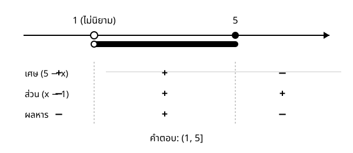

Maths Fundamentals for DS & CS — สัปดาห์ 01
จะเรียน:
$$ a < b \quad\text{และ}\quad c < 0 \quad\Longrightarrow\quad ac > bc $$
ผลที่ตามมาซึ่งเป็นกฎเหล็กของช่วงนี้
$$ \begin{aligned} 3x - 5 &< 7 && \\ 3x &< 12 && \\ x &< 4 && \text{หารด้วย } 3 \;\text{ (บวก — ทิศไม่กลับ)} \;\Rightarrow\; (-\infty, 4) \end{aligned} $$
$$ \begin{aligned} -2x + 1 &\ge 7 && \\ -2x &\ge 6 && \\ x &\le -3 && \text{หารด้วย } -2 \;\Rightarrow\; \textbf{ทิศกลับ} \;\Rightarrow\; (-\infty, -3] \end{aligned} $$
ตรวจคำตอบ: ลองค่าในช่วงและนอกช่วงเสมอ — $x=0$ ในข้อสอง ได้ $1 \ge 7$ เท็จ ✓ สอดคล้อง
ขั้น 1 จัดให้อยู่รูป (นิพจน์) > 0 หรือ >= 0
ย้ายทุกอย่างมาข้างเดียว รวมเป็นเศษส่วนเดียว ห้ามคูณไขว้
ขั้น 2 หาค่าวิกฤต
จากตัวเศษ = 0 -> รวมเข้าคำตอบได้ ถ้ามีเครื่องหมายเท่ากับ
จากตัวส่วน = 0 -> รวมเข้าคำตอบไม่ได้เลย
ขั้น 3 ตรวจเครื่องหมายของแต่ละตัวประกอบในแต่ละช่วง แล้วคูณเครื่องหมายความต่างของค่าวิกฤตสองชนิดในขั้น 2 คือจุดที่นักศึกษาเสียคะแนนมากที่สุดในเรื่องนี้
โจทย์: แก้ $x^2 \le 4x$
$$ x^2 - 4x \le 0 \;\Longleftrightarrow\; x(x-4) \le 0 \qquad \text{ค่าวิกฤต } 0 \text{ และ } 4 $$
ช่วง x < 0 0 < x < 4 x > 4
x - + +
(x - 4) - - +
ผลคูณ + - +ค่าวิกฤตทั้งสองมาจากตัวเศษ จึงรวมเข้าไปได้ → ตอบ $[0, 4]$
ถ้าหารด้วย $x$ จะได้ $x \le 4$ ซึ่งผิด เพราะรวม $x$ ที่เป็นลบทั้งหมดเข้ามาด้วย
โจทย์: แก้ $\dfrac{x+3}{x-1} \ge 2$ · โดเมน $x \ne 1$
$$ \frac{x+3}{x-1} - 2 \ge 0 \;\Longleftrightarrow\; \frac{(x+3) - 2(x-1)}{x-1} \ge 0 \;\Longleftrightarrow\; \frac{5-x}{x-1} \ge 0 $$
ช่วง x < 1 1 < x < 5 x > 5
(5 - x) + + -
(x - 1) - + +
ผลหาร - + -$x=5$ มาจากตัวเศษ → รวมได้ · $x=1$ มาจากตัวส่วน → รวมไม่ได้ → ตอบ $(1, 5]$

อสมการเป็นภาษาของการรับประกันเชิงปริมาณ ทุกครั้งที่ระบุว่าอัลกอริทึมใช้เวลาไม่เกินเท่าใด หรือค่าประมาณคลาดเคลื่อนไม่เกินเท่าใด สิ่งที่เขียนอยู่คืออสมการ · รูป $\lvert x - \hat x \rvert \le \varepsilon$ คือหัวใจของทั้งการวิเคราะห์ความคลาดเคลื่อนเชิงตัวเลขและช่วงความเชื่อมั่น
แต่เหตุผลหลักคือตารางเครื่องหมาย — สัปดาห์ 5 การหาว่าฟังก์ชันเพิ่มหรือลดที่ช่วงไหน ทำโดยหาค่าวิกฤตของ $f'$ แล้วทำตารางเครื่องหมายของ $f'$
$$ \text{ตารางเครื่องหมายของ } (x-2)(x-3) \quad\longleftrightarrow\quad \text{ตารางเครื่องหมายของ } f'(x) $$
เป็นกระบวนการเดียวกันโดยตรง ต่างกันเพียงนิพจน์ที่นำมาใส่ในตาราง ผู้ที่ยังไม่ชำนาญเรื่องตารางเครื่องหมายในวันนี้ จะไม่สามารถทำ first derivative test ได้ในสัปดาห์ 5
จบสัปดาห์ 1 ควรทำได้:
สามข้อของสัปดาห์นี้:
การบ้าน: exercises/ex_01.md ข้อ 23–25 และทบทวนทั้งชุด · อ่าน note หัวข้อ 4 ให้ครบ — ตัวอย่าง 4.3 และ 4.7 มีแต่ใน note โดย 4.7 คือ $\tfrac1x < 2$ ที่คำตอบมีสองช่วงและช่วงหนึ่งเป็นค่าลบทั้งหมด